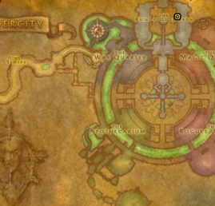

Las Ruinas de Lordaeron, cuya entrada esta justo en la entrada de Entrañas, es una de las nuevas mazmorras disponibles para los primeros niveles en World of Warcraft Forever, junto con Hall of Thanes en Forjaz.
En esencia los jugadores deben entrar para acabar con las fuerzas remanentes de la plaga en los claros de Tirisfal.

| Quest | Nivel | Facción | Empieza |
|---|---|---|---|
| The Wrath of Rath'mael | 15 | H | Tirisfal Glades - Deathguard Kristof |
| A Frightened Request | 15 | H | Silverpine Forest, The Sepulcher - Tabitha Heartweaver |
| Light's Justice | 15 | H | Undercity, The Apothecarium - Morbin Lightbane |
| The New Plague | 15 | H | Undercity, The Apothecarium - Theodore Griffs |
| Unending Torment | 16 | H | The Ruins of Lordaeron, King's Alley - The Baron |
| [Secret quest] Crest of Lordaeron | 14 | A / H | The Ruins of Lordaeron, Multiple Spawn Points |
| Abominable Creatures | 16 | A | The Ruins of Lordaeron, Dungeon Entrance - Captain Truman |
| Bloodied Insignia | 16 | A | The Ruins of Lordaeron, Drops from Undead Mobs |
| Remember That I Love You | 15 | A | The Ruins of Lordaeron, Rath'mael |
Los enemigos en esta mazmorra son en su mayoria no muertos
a excepcion de las arañas al sur de la instancia.
Hay un total de 6 nuevos jefes y un rare.